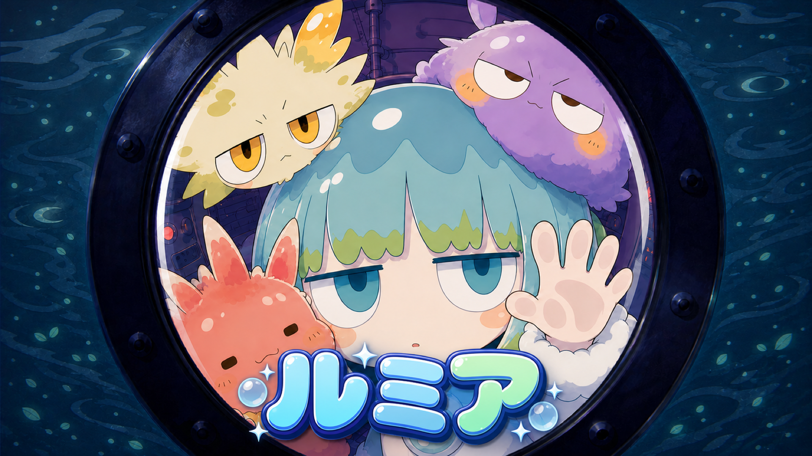

NEXT CASE02
制作記録は
作品とともに増える。
NILのMV、短編アニメ、オリジナル企画、コンテスト作品。既存ログを順番に監査し、この上位アーカイブへ統合していきます。
ARCHIVE IN PROGRESSLEER / CREATIVE KNOWLEDGE BASE
作品が完成するまでの、
判断と失敗を残す。
完成映像だけでは見えない企画、要件、選定、修正、手作業を記録し、次の作品で再利用できる制作知識へ変換します。
01 / CASE STUDIES

公募要件の回収から、楽曲、魚眼の丸窓、キーフレーム、Seedance 2.0、Remotion字幕、TapTV・X・Googleフォーム提出まで。
NILのMV、短編アニメ、オリジナル企画、コンテスト作品。既存ログを順番に監査し、この上位アーカイブへ統合していきます。
ARCHIVE IN PROGRESS02 / ARCHIVE POLICY
締切、権利、禁止事項、納品仕様、必須表記、提出順を、制作より先に固定する。
採用案だけでなく、方向転換、却下理由、前提が崩れた瞬間を残す。
「微妙」で終わらせず、症状、原因、修正方針を次回のルールへ変える。
人が決めたこと、AIへ渡したこと、手作業、未確認事項を混ぜない。
03 / CREATIVE DNA
好きなアニメ、音楽、本、構図、速度、文字、色、余白。会話の中で共有された嗜好を作品横断の知識として蓄積し、次の企画の判断材料へ変えていきます。